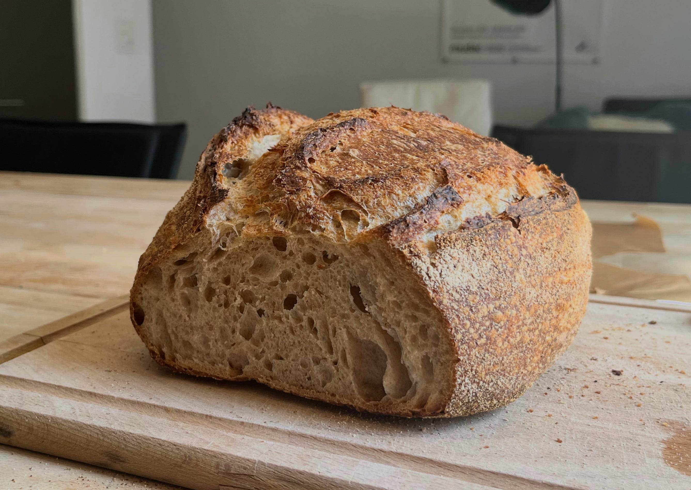
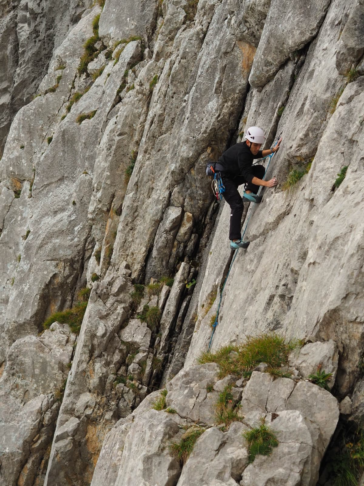

Other information

Outside mathematics I really love traveling and photography. I try to have a camera with me whenever I leave home, and in fact most of the pictures on this website are my own. I like cinema too, and lately I have been discovering Richard Linklater's filmography.Writing, sketching, cooking and playing (and listening to) music (especially Italian indie) are among my hobbies and interests too, and recently I have taken an interest in computer graphics, real-time rendering and physical simulations (such as how to simulate ocean waves à la Tessendorf like in the film Titanic or the video game Sea of Thieves).

I like to spend the rest of my time outdoors. I started running a long time ago, and it has stuck with me since then more than any other sport. I like bouldering and sport climbing as well, especially slab walls, and road cycling too. During the winter I take any chance I can to go skiing.